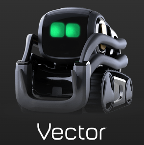
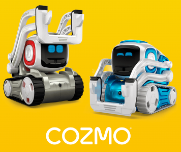
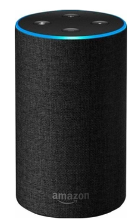

ARTIFICIAL CREATURES
CHALLENGE
RESEARCH
Dit is het research gedeelte van de Artificial Creature challenge.
Anki Vector en Cozmo
Vector is een klein robotje gemaakt door het bedrijf Anki. Het is ontworpen om als robot ‘sidekick’ in huis te hebben. Vector helpt met taken en om met de gebruiker te hangen. Hij is geprogrammeerd op interactie aan de hand van zicht, geluid en aanraking. In vector zit een ingebouwde Alexa. De robot heeft ook een kinderversie die als vriend kan zijn voor het kind. Dit is Cozmo. Cozmo kan meer dan 100 verschillende emoties tonen en heeft meer dan 30 mini-games waar kinderen mee kunnen spelen.
Ik vind dit interessant, omdat het voor mij een duidelijke vergelijking geeft met wat voor speelgoed ik vroeger mee speelde en wat er nu op de markt staat. Het laat in perspectief zien hoever technologie is gekomen in zo’n korte tijd dat zelfs met de kleinste taken een robot te pas kan komen.
Video die laat zien hoe het werkt:
video
  Amazon Alexa
Amazon Alexa
Amazon Alexa, ook wel bekend als Alexa, is een virtuele assistent ontwikkeld door het bedrijf Amazon. De gebruiker kan tegen Alexa praten door Alexa te noemen. Vervolgens kan de gebruiker een vraag stellen of een opdracht noemen aan Alexa waar zij op antwoord. Dit kan van alles zijn zoals: ‘Alexa, speel mijn favoriete muziek af.’, ‘Alexa, zet op mijn boodschappenlijst 5 appels.’. Alexa is erg veelzijdig en kan op allerlei verschillende apparaten bevestigd worden. Daarnaast, kan Alexa allerlei digitale dingen bedienen, zoals lichtknoppen, mits deze aangesloten zijn.
Alexa is een slimme toevoeging aan elk huishouden. Het is net zoals Siri, alleen dan overal en kan het veel meer. Het is een gadget die het leven thuis makkelijker maakt en wie vindt dat nou niet leuk?
video
Jibo
Jibo kwam uit in 2012, maar is sinds een jaar van de markt gehaald. Desalniettemin was het een interessant project. Jibo is een robot die om zijn eigen as kan draaien en met zijn omgeving in contact kan zijn. Het volgt gezichten en kan foto’s maken. Daarnaast kan ook gebeld worden en tijdens het bellen kan de beller de gehele omgeving zien en met iedereen omgaan. Het heeft ook nog vele andere functies die de meeste AI’s hebben.
Ik vond het zelf erg interessant, omdat ik nog niet af wist van iets dat om zijn eigen as kan draaien waardoor de gebruiker een 360 graden view heeft. Als het nog niet van de markt was het gehaald had ik zelf echt overwogen om het te kopen, het lijkt mij op een fijne toevoeging in het huis.